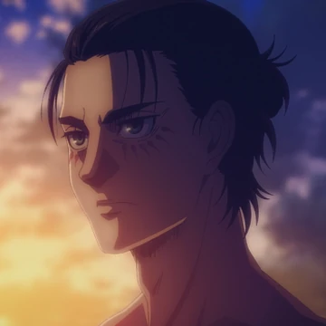

Eren Yeager
From 834 to 853
Eren Yeager, also known as the Attack Titan, is the main protagonist of the Attack on Titan franchise. He is a young boy from Shiganshina District, the southernmost town of Wall Maria, the outer wall of Paradis Island, and the childhood friend of Mikasa Ackerman and Armin Arlert. He holds a personal vendetta against all Titans and his goal is to wipe them all off the face of the Earth, due to witnessing one of the Titans killing his mother.
Attack On Titan
- Eren ranked second in the characters popularity poll right after Levi.
- Eren as a normal man-eating Titan was very small: 4 meters
- In a flashback, his father notes that as a child, Eren did not make friends easily, and that's why he had only Armin.
- Guren no Yumiya (Red Lotus Arrow) is Eren's theme song.
- Hajime Isayama stated in a interview that he based Eren's titan form off of the Japanese martial artist Yūshin Okami, paraphrasing it to be the "ideal physique of a middleweight mixed martial artist."
- The opening song of the anime, Guren no Yumiya, seemingly makes reference to this in its first lyrics ("Sie sind das Essen und wir sind die Jäger!" lit. "They are the food and We are the hunters!").
- The name Eren is of Turkish origin. It can be interpreted as a "man", "saint", or "holy person". It's also phonetically similar to "Aaron", which is the anglicised form of the Hebrew name "Aharown" meaning "light bringer"
-
Bryce Papenbrook the voice of English voice actor for Eren was
a fan of the series and was excited to voice Eren when he was
cast.
- Bryce also voices Kazuto "Kirito" Kirigaya in Sword Art Online, Rin Okumura in Blue Exorcist, Shirou Emiya in Fate/Stay Night, Masaomi Kida in Durarara!!, Inosuke Hashibira in Demon Slayer: Kimetsu no Yaiba, Yo Shindo/Grand in My Hero Academia, Adrien Agreste/Cat Noir in Miraculous: Tales of Ladybug and Cat Noir, Red in Pokémon: Origins, and Law in Tales of Arise.
- Eren ranked second in the characters popularity poll right after Levi.
- Eren as a normal man-eating Titan was very small: 4 meters
- In a flashback, his father notes that as a child, Eren did not make friends easily, and that's why he had only Armin.
- Guren no Yumiya (Red Lotus Arrow) is Eren's theme song.
- Hajime Isayama stated in a interview that he based Eren's titan form off of the Japanese martial artist Yūshin Okami, paraphrasing it to be the "ideal physique of a middleweight mixed martial artist."
- The opening song of the anime, Guren no Yumiya, seemingly makes reference to this in its first lyrics ("Sie sind das Essen und wir sind die Jäger!" lit. "They are the food and We are the hunters!").
- The name Eren is of Turkish origin. It can be interpreted as a "man", "saint", or "holy person". It's also phonetically similar to "Aaron", which is the anglicised form of the Hebrew name "Aharown" meaning "light bringer"
-
Bryce Papenbrook the voice of English voice actor for Eren was
a fan of the series and was excited to voice Eren when he was
cast.
- Bryce also voices Kazuto "Kirito" Kirigaya in Sword Art Online, Rin Okumura in Blue Exorcist, Shirou Emiya in Fate/Stay Night, Masaomi Kida in Durarara!!, Inosuke Hashibira in Demon Slayer: Kimetsu no Yaiba, Yo Shindo/Grand in My Hero Academia, Adrien Agreste/Cat Noir in Miraculous: Tales of Ladybug and Cat Noir, Red in Pokémon: Origins, and Law in Tales of Arise.